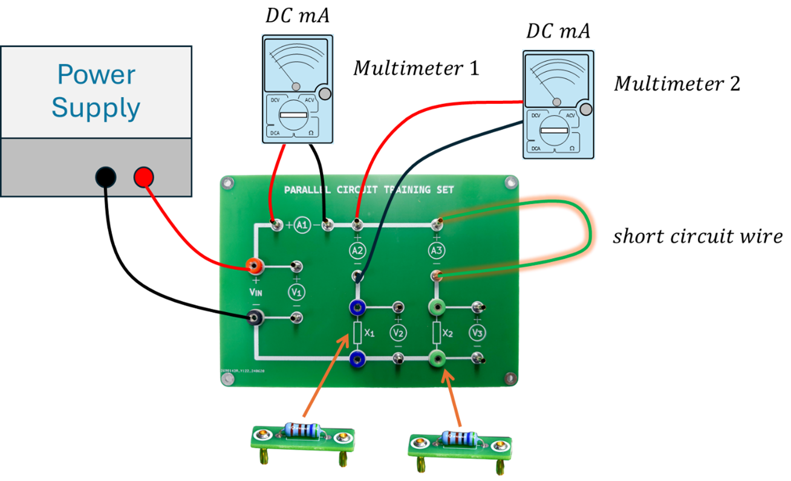

<!DOCTYPE html>
<html lang="th"></html>
<head>
    <meta charset="UTF-8">
    <meta name="viewport" content="width=device-width, initial-scale=1.0">
    <title>PARALLEL CIRCUIT TRAINING SET</title>
    <style>
        body {
            margin: 20px; /* ระยะห่างจากขอบ */
            font-family: Arial, sans-serif;
            background: #ced8fa; /* สีม่วงอ่อนพื้นฐาน */
            color: #333;
        }
        h1 {
            color: #880088; /* สีฟ้าสว่าง */
        }
        nav ul {
            list-style-type: none;
            padding: 0;
        }
        nav ul li {
            margin: 5px 0;
        }
        nav ul li a {
            text-decoration: none;
            color: #000088; /* สีฟ้าสว่าง */
        }
    </style>
</head>
<body>
    <h1>PARALLEL CIRCUIT TRAINING SET</h1>
    <p>ชุดฝึกทดลองวงจรไฟฟ้าแบบขนาน ที่จะเปิดโลกทัศน์ใหม่ของการเรียนรู้ไฟฟ้าให้คุณ!</p>

    


    <h2>ทำไม PARALLEL CIRCUIT TRAINING SET คือตัวเลือกที่ดีที่สุด?</h2>
    <ul>
        <li><strong>เรียนรู้แบบลงมือทำ:</strong> สัมผัสประสบการณ์จริงในการต่อวงจรแบบขนาน เรียนรู้หลักการแบ่งกระแสไฟฟ้าและแรงดันในวงจรแบบขนานได้อย่างเข้าใจง่าย</li>
        <li><strong>ออกแบบมาให้เข้าใจง่าย:</strong> แผงวงจรสีสันสดใส จุดเชื่อมต่อที่ชัดเจน เรียนรู้ส่วนประกอบต่างๆ ได้อย่างรวดเร็ว เหมาะสำหรับผู้เริ่มต้นและผู้ที่ต้องการทบทวนความรู้</li>
        <li><strong>ครบครันในชุดเดียว:</strong> มาพร้อมอุปกรณ์ที่จำเป็นสำหรับการทดลองวงจรแบบขนาน ไม่ต้องเสียเวลาหาอุปกรณ์เพิ่มเติมให้ยุ่งยาก</li>
        <li><strong>พัฒนาทักษะการคิดวิเคราะห์:</strong> ฝึกฝนการวิเคราะห์วงจร การวัดค่าแรงดันและกระแสไฟฟ้าในแต่ละจุด พัฒนาทักษะการแก้ปัญหาอย่างเป็นระบบ</li>
        <li><strong>เหมาะสำหรับทุกระดับการเรียนรู้:</strong> ไม่ว่าคุณจะเป็นนักเรียน นักศึกษา หรือผู้ที่สนใจในวงจรไฟฟ้าแบบขนาน ก็สามารถใช้ชุดฝึกทดลองนี้เพื่อเพิ่มพูนความรู้และทักษะได้</li>
    </ul>

    <h2>PARALLEL CIRCUIT TRAINING SET ประกอบด้วย:</h2>
    <ul>
        <li>แผงวงจรพร้อมจุดเชื่อมต่อและสัญลักษณ์ที่เข้าใจง่าย</li>
        <li>ตัวต้านทาน (Resistors)</li>
        <li>จุดวัดแรงดัน (Voltage measurement points)</li>
        <li>จุดวัดกระแส (Current measurement points)</li>
        <li>และอุปกรณ์อื่นๆ ที่จำเป็นสำหรับการทดลอง</li>
    </ul>

    <h2>ด้วย PARALLEL CIRCUIT TRAINING SET คุณจะสามารถ:</h2>
    <ul>
        <li>ต่อวงจรไฟฟ้าแบบขนานได้อย่างง่ายดาย</li>
        <li>วัดค่าแรงดันและกระแสไฟฟ้าในแต่ละสาขาของวงจร</li>
        <li>เรียนรู้ความสัมพันธ์ระหว่างแรงดัน กระแส และความต้านทานในวงจรแบบขนาน</li>
        <li>เข้าใจหลักการแบ่งกระแสในวงจรแบบขนาน</li>
        <li>และอื่นๆ อีกมากมาย!</li>
    </ul>


    <h2>ตัวอย่างการใช้งาน:</h2>

    


    <p>ปลดปล่อยศักยภาพการเรียนรู้ไฟฟ้าของคุณให้เต็มที่!</p>
</body>
</html>